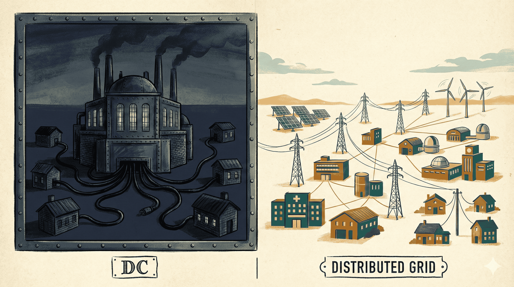
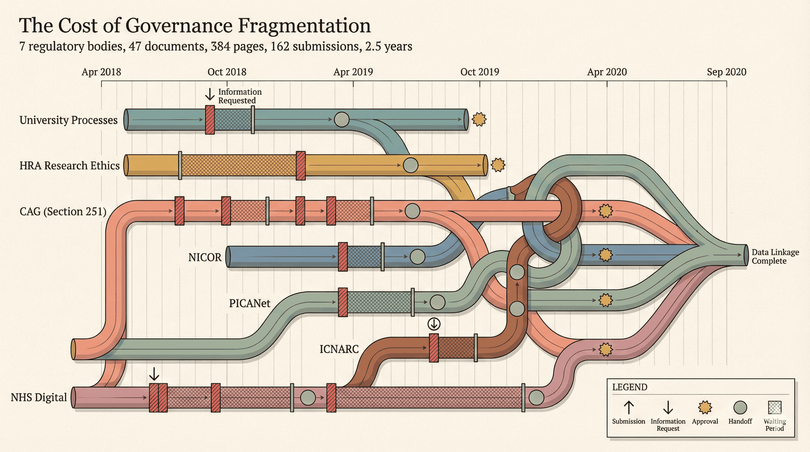
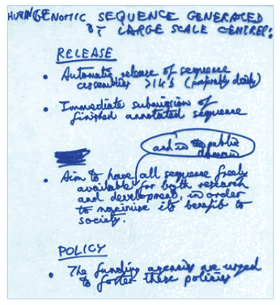
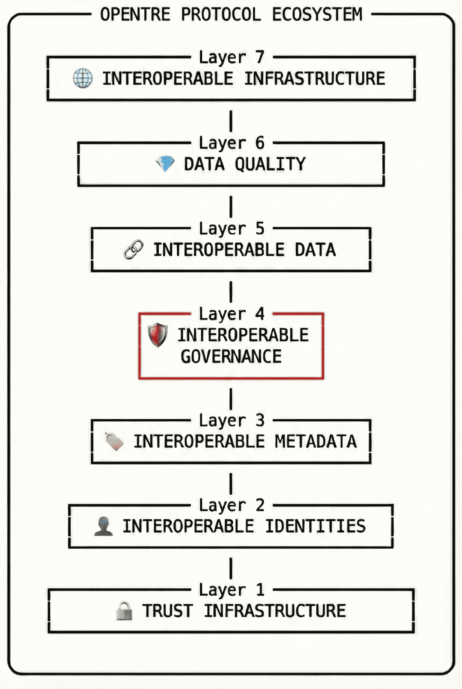

In 60 Seconds
What: OpenTRE proposes a shared protocol layer (identity, governance, analytics, and discovery) that lets existing NIH-funded platforms interoperate without replacing any of them.
Why: The US has invested tens of billions in biomedical data platforms that cannot talk to each other, costing researchers months of duplicated access negotiations and leaving cross-cutting scientific questions unanswerable.
What should be done now: NIH should require GA4GH Passport compliance and machine-readable governance in all new data platform grants: a protocol mandate that can begin within existing appropriations by redirecting current platform spend, protecting every dollar already invested.
The Current Wars

In the 1880s, Thomas Edison and George Westinghouse fought the "Current Wars," a bitter battle over how to electrify America. Edison championed direct current (DC): simple, local, and controlled by Edison's company. Westinghouse backed alternating current (AC): standardised interfaces, long-distance transmission, and an open market where anyone could build on the grid.
Edison's DC worked beautifully for a single city block. It could not scale. Every new neighbourhood needed its own power station, its own wiring, its own operator. AC, standardised through transformers and regulated through grid codes, could power a continent.
Edison fought dirty, publicly electrocuting animals to prove AC was dangerous. He lost anyway. The real history is more complex than this sketch. Tesla's polyphase motor and long-distance transmission advantages were the decisive technical factors. But the structural lesson endures. Edison lost not because AC was safer (it isn't, inherently), but because regulated interoperability scales and proprietary control does not.
AC won because of the transformer: a device that stepped voltage up for long-distance transmission and down again for local use, allowing any generator and any appliance to join the same grid. In today's biomedical research system, GA4GH Passports are the transformer: they step a researcher's credentials up into a portable, machine-verifiable format and step them down again at each platform, allowing any data repository and any analytics environment to join the same grid.
The Current Wars ended over a century ago, but their structural logic is playing out right now in US biomedical research, with an embarrassingly familiar problem: hundreds of data portals, each excellently engineered, none able to talk to each other. The world's most generously funded research system, where NIH alone distributes over $47 billion annually, has produced a patchwork of DC power stations. Each portal lights up its own city block. None of them share a grid.
Key Takeaway
The US biomedical data system recapitulates the Current Wars: dozens of proprietary power stations, no shared grid. GA4GH Passports are the transformers that could connect them.
The Landscape: $48 Billion, Forty Silos
Glossary of Key Terms
- TRE
- Trusted Research Environment: a secure computing space where approved researchers analyse sensitive data without the data leaving the environment.
- SDE
- Secure Data Environment: the UK NHS term for a TRE.
- OMOP
- Observational Medical Outcomes Partnership Common Data Model: a standard schema for representing clinical data so queries work across institutions.
- FHIR
- Fast Healthcare Interoperability Resources: an HL7 standard for exchanging healthcare information electronically.
- GA4GH
- Global Alliance for Genomics and Health: an international standards body for genomic and health data sharing.
- ODRL
- Open Digital Rights Language: a W3C standard for expressing data use policies in machine-readable form.
- DUO
- Data Use Ontology: a GA4GH standard vocabulary for encoding consent-based data use conditions.
- OHDSI
- Observational Health Data Sciences and Informatics: a global network running federated analytics on the OMOP model across 544 data sources.
- N3C
- National COVID Cohort Collaborative: an NIH platform with 23M+ patient records, hosted on Palantir Foundry.
- CFDE
- Common Fund Data Ecosystem: an NIH initiative to connect data across Common Fund programmes.
- GREI
- Generalist Repository Ecosystem Initiative: an NIH programme aligning metadata across seven generalist repositories.
- DMS Policy
- NIH Data Management and Sharing Policy (2023): the first NIH-wide mandate requiring funded researchers to share scientific data.
- RAS
- Researcher Auth Service: NIH's national identity broker implementing GA4GH Passports.
The mandate without infrastructure
In January 2023, the NIH Data Management and Sharing (DMS) Policy took effect, the first NIH-wide mandate requiring all funded researchers to share scientific data. A major policy shift, and also, to put it bluntly, an unfunded mandate. No new money for repositories. No compliance infrastructure. No interoperability requirements. Thousands of Data Management and Sharing Plans have since been filed. Almost none of them are verifiable. The DMS Policy told researchers to share. It gave them nowhere coherent to share to.
The catalogue without connections
The Common Fund Data Ecosystem (CFDE), representing roughly $50 to $100 million in total investment, was designed to connect data across Common Fund programmes. After years of work, it covers only 13 of approximately 40 Common Fund programmes. The CFDE portal enables discovery but not integration or federated analysis. Individual programme portals remain separate islands. Another DC power station, larger than most, but still wired for one neighbourhood.
The Generalist Repository Ecosystem Initiative (GREI), now in its fourth year, has made real progress: seven generalist repositories (Dryad, Figshare, Dataverse, Zenodo, and others) aligned on metadata standards via schema.org. But metadata alignment is not data interoperability. You can find the dataset. You still cannot query across repositories or run federated analysis.
The platform without a parachute
All of Us, NIH's flagship precision medicine programme, is a $1.14 billion investment from the 21st Century Cures Act. It has enrolled over 832,000 participants, with notable diversity: 45% from underrepresented backgrounds. Yet its budget has been volatile: from $541 million in FY2023 to $158 million proposed for FY2025, a 71% reduction. It is a centralised platform, not a federated one, and an HHS Office of Inspector General cybersecurity audit flagged unresolved vulnerabilities. A single programme, however well-funded, is brittle by design. When funding is cut, the platform and every pipeline built on it are at risk.
The National COVID Cohort Collaborative (N3C) was a pandemic success story: over 23 million patient records, 240+ contributing sites, 4,100+ registered researchers. But it runs on Palantir's Foundry platform under a contract exceeding $60 million. Researchers who built analytical pipelines on Foundry are now locked into Foundry. That is the trade-off N3C made: speed during a crisis, at the cost of independence afterwards.
The consortium without a grid
The Accelerating Medicines Partnership (AMP), representing roughly $1 billion across disease areas, shows the problem most clearly. AMP AD (Alzheimer's Disease) runs on Synapse. AMP PDRD (Parkinson's Disease) runs on Google Cloud. AMP T2D and its successor AMP CMD (Type 2 Diabetes / Common Metabolic Diseases) was hosted at the Broad Institute. AMP RA/SLE and its successor AMP AIM (Rheumatoid Arthritis / Lupus) runs on Synapse. AMP ALS also runs on Synapse. Three of the five AMP programmes share a platform and have well-aligned metadata and governance. Yet a researcher approved for AMP AD data cannot use those credentials to access AMP PDRD or AMP CMD. The same consortium, funded by the same agency, cannot run a cross-disease analysis without bespoke agreements for each portal.
NIH has also invested in multiple cloud-based analysis environments: AnVIL (genomic data, Broad/WashU), BioData Catalyst (heart/lung/blood/sleep, NHLBI), the Cancer Research Data Commons (NCI), and Kids First (paediatric, NICHD). The NIH Cloud Platform Interoperability (NCPI) effort is attempting to connect them, but after years of work, cross-platform queries remain experimental.
US Biomedical Data Landscape at a Glance
| Programme | What Works | Why It Does Not Federate | Structural Lesson |
|---|---|---|---|
| N3C | 23M patient records; pandemic-speed assembly | Single-vendor platform (Palantir Foundry); pipelines locked in | Speed without open interfaces creates lock-in |
| All of Us | 832K participants; 45% from underrepresented backgrounds | Centralised platform; budget volatility (71% proposed cut FY2025) | Centralised programmes are structurally fragile to budget cycles |
| AMP | $1B+ across disease areas; real science | Same consortium, three platforms, no credential portability | Even internal consortia silo without shared protocols |
| OHDSI | 974M records; 544 sources; 54 countries; no central warehouse | Governance and identity are out of scope; ETL burden on sites | Protocol-first design scales; missing layers are still missing |
| CFDE | Discovery across 13 Common Fund programmes | No integration or federated analysis; only 13 of ~40 programmes | Catalogues without query layers are incomplete |
| GREI | Seven repositories aligned on schema.org metadata | Surface-level alignment[1]; no cross-repository query | Guidelines without protocols produce unverifiable compliance |
| NCPI | Connecting AnVIL, BioData Catalyst, CRDC, Kids First | Cross-platform queries remain experimental after years | Connecting platforms after the fact is harder than designing for interop |
None of these programmes is bad. Most of them are impressive. That is the frustration. Tens of billions invested, real science produced, and there is still no grid. Researchers are told to share data but given no shared infrastructure to share it through. We have built dozens of excellent power stations and somehow forgotten to agree on the voltage. Taylor et al. (2021) documented the cost of this kind of governance fragmentation: duplicated reviews, inconsistent access timelines, and wasted researcher effort navigating incompatible systems.

The Portals We Built
I should declare my own position. I am Chief Data Officer at Sage Bionetworks, a non-profit research organisation that operates Synapse, one of the larger biomedical data platforms in the US ecosystem.
Synapse hosts over 3.8 petabytes of data. It is the data coordination platform for several major NIH programmes, including the AD Knowledge Portal, HTAN (the Human Tumor Atlas Network), the NF Data Portal, GENIE (Genomics Evidence Neoplasia Information Exchange, with data from over 211,000 cancer patients across 19 institutions), and portals for ALS, ARK, PsychENCODE, and the ELITE programme. More than 100,000 registered users access data through these portals.
I am proud of what we have built. Synapse is well-governed. It has data use agreements, access controls, provenance tracking, and a consent-aware architecture that most commercial platforms lack. The portals we operate have accelerated real science: the AD Knowledge Portal alone has contributed to hundreds of publications and several drug target discoveries.
And yet. Each of these portals is, structurally, a DC power station.
Within the Synapse ecosystem, some alignment exists. A researcher using credentials for AMP AD can use the same credentials to access AMP AIM and AMP ALS, with metadata fairly well aligned and governance processes harmonised. But the same cannot be said for accessing AMP PDRD or AMP CMD simultaneously. The AMP SysBio project and its FAIRPlex platform aim to solve this: cross-AMP data discovery, federated search, harmonised governance. These are the right goals, and FAIRPlex has made meaningful progress on cross-AMP metadata alignment and data discovery. But the approach is still to build another coordinating platform on top of existing platforms, rather than standardising the interfaces between them. The basic technical interoperability, OIDC-based authentication, GA4GH DRS for data access, existing data use agreements, could be achieved with protocols that already exist. Instead, the reflex is to add another layer, another portal, another metadata catalogue. I bear some responsibility for this. I was in those rooms. I could have pushed harder for protocol-first design, where we prioritised the urgent delivery of working environments over the slower, more difficult work of standardising interfaces. But this is not really a confession; it is a diagnosis. Every smart team in this ecosystem keeps making the same choice, for the same reason: funding cycles reward delivery speed, and interoperability can always wait until next year. The incentive structure makes portal-building rational and protocol-building invisible. That structural trap, not any individual failure of will, is why the grid does not exist. The cost shows up in the questions we still cannot answer.
The AMP Systems of Biology Inflammation (SBI) project showed what cross-AMP data analysis could look like through its six pilot projects. We are still trying to recreate it, without focusing on the core problem that plagued those pilots: interoperable governance. The problem is that "governance" is a loaded term. It means different things to different people. Almost everyone will agree that good governance is important, but nobody can agree what "good" is or what it will look like. So we bikeshed: everyone has an opinion on the colour, but nobody wants to lay the foundations. Get interoperable governance right and everything else follows.
The portals serve their communities. But they do not yet serve the cross-cutting questions that biomedical science increasingly needs to ask: What do Alzheimer's and Parkinson's share at the molecular level? Which cancer subtypes respond to treatments originally developed for autoimmune disease? These questions require querying across portals. And today, that requires heroic manual effort: months of negotiation, duplicated ethics reviews, incompatible access systems, before a single line of code is written. A researcher's grant clock does not pause while four separate data access committees deliberate.
A Researcher's Bill of Rights
If a protocol layer existed, every NIH-funded researcher would have:
- Cross-portal search. One query across all NIH-funded repositories, not forty separate catalogues.
- Automated access for routine queries. When credentials, purpose, and data conditions clearly match, access granted in hours, not months.
- Portable credentials. One GA4GH Passport accepted everywhere: a "Passport to Science," not a credentialing nightmare repeated at every portal.
- Transparent governance logs. Machine-readable records of every access decision, open to audit by researchers, institutions, and participants.
- Time-to-science measured in days, not months. The grant clock starts when the question forms, not when the last data access committee replies.
Time-to-Science
Negotiation, approval, and onboarding vs. protocol-based access
Why Portals Are Not Enough
The DMS Policy created the obligation to share but not the infrastructure to interoperate. Each programme built bespoke solutions because no shared protocol layer existed. The result is a coordination failure: every team rationally builds the best portal it can for its own programme, and the aggregate outcome is forty portals with zero interoperability.
Elinor Ostrom would recognise this immediately. Her work on governing commons showed that cooperation problems can be solved without centralisation, provided participants agree on clear rules and enforce them. The US biomedical data ecosystem is a commons problem. The technology has existed for years. Nobody has agreed on the rules.
Consider the identity problem. NIH built the Researcher Auth Service (RAS) to solve it: a national identity broker implementing GA4GH Passports. The technology is sound. But RAS's authorisation model is centralised: it must be the sole issuer of every Visa within a Passport. A data repository cannot add its own signed Visa, even for datasets it manages directly. A researcher with legitimate access to both a dbGaP dataset and a consortium dataset arrives at a Trusted Research Environment with an incomplete Passport, and the planned multi-dataset analysis fails. RAS Visas cannot be repackaged into non-RAS Passports; partner repositories cannot link user accounts from other identity providers. There is no federation with international systems like Life Science Login or ORCID. The engineering is solid. The architecture is wrong.
The discovery problem follows the same pattern. GREI was established to align metadata across seven generalist repositories. After years of work, NIH's own Council of Councils Working Group (May 2025) found that the alignment remains "surface-level", that GREI's FAIR compliance claims are "unverifiable", and that it is "difficult to determine actual impact." No cross-repository search exists. There is no DCAT alignment, no harmonisation of access conditions or governance provenance. The initiative is not a failure of effort. It is what happens when you try to coordinate repositories through guidelines rather than through shared protocols.
Programme-specific platforms are inherently fragile. Budgets always shift, and when they do, the platform is at risk along with every pipeline built on it. All of Us has already seen its funding swing dramatically. TCP/IP has survived seven US presidents. GenBank has survived nine NIH directors over 44 years, but GenBank is infrastructure that functions as a protocol: an open standard for sequence deposition, not a programme-specific portal. The programme-specific platforms that most NIH-funded researchers actually interact with are far more fragile.
The US does not need more portals. It needs what the power industry needed in the 1890s: not a bigger generator, but a shared grid.
There is one more constituency that a protocol layer serves: the patients and research participants whose data makes all of this possible. Over 832,000 people enrolled in All of Us. Millions more contributed to N3C, PCORnet, and disease-specific registries. They were told their data would advance science. When that data is locked in silos that cannot interoperate, the promise is only partially kept. A protocol layer with transparent governance logs and machine-readable consent makes the use of their data auditable and accountable, worthy of the trust they placed in the system.
The Bermuda Precedent
This week, between 25-28 February 2026, scientists are gathering at the Hamilton Princess Hotel in Bermuda for the 30th anniversary of the Bermuda Principles, the agreement that opened the Human Genome Project's data to the world.
The original Bermuda Principles, adopted 25 to 28 February 1996 at that same hotel, proved that the multi-stakeholder coordination problem can be solved. Bermuda was, in effect, the first successful "grid agreement" for biological data: simple rules that turned competing sequencing centres into a shared resource. They are a direct precedent.
The story begins with worms. John Sulston at the Sanger Centre and Robert Waterston at Washington University had been sharing C. elegans genome sequence data daily, before publication, with no restrictions. When the Human Genome Project scaled up, they proposed the same radical norm for human DNA: release all sequence data to public databases within 24 hours of generation. No embargoes. No patents on raw sequence. No permission required.
NIH and the Wellcome Trust made this a condition of funding. The principles fit on a single page. Implementation used existing infrastructure: GenBank, EMBL, and DDBJ, three mirrored databases that any centre could deposit into and any researcher could access. No single operator controlled the system. The protocol was the agreement. Everything else was implementation.

The numbers are worth stating plainly. GenBank grew from 730.6 million bases in 1996 to 50.59 trillion bases by February 2026: a 69,000-fold increase. The $3.8 billion Human Genome Project generated an estimated $965 billion in economic activity (Battelle, 2013). When COVID-19 struck, GISAID, directly inspired by Bermuda's rapid-release model, enabled global viral surveillance in real time.
This was not a technology platform. It was a social protocol: simple rules, funder enforcement, decentralised implementation, open access. The governance lineage runs directly to the present: Fort Lauderdale (2003), Toronto (2009), GA4GH (2013). And the consequence was permissionless innovation at the tooling layer: because the data was open and the protocols were shared, anyone could build tools on top of the grid. BLAST, Ensembl, UCSC Genome Browser, Galaxy: none of these were planned by the original funders. They emerged because the protocol layer created a Marketplace of Tools on top of a Grid of Data. No single-vendor lock-in. Permissionless innovation at the application and tooling layer; never permissionless data access. Every query is still authenticated, authorised, and logged.
When the protocol is open, the result is not a walled garden controlled by a single vendor; it is a marketplace. Any team -- academic, commercial, or government -- can build tools on top of the grid, the same way the open Web enabled Google, Wikipedia, and thousands of startups to build on HTTP without asking permission from a central authority. That marketplace is what today's biomedical data system lacks: N3C locks pipelines into Foundry, the CFDE locks discovery into one portal, and each platform's tools are trapped inside its own walled garden.
Biomedical research data is harder than raw genome sequence in three specific ways. It is identifiable and subject to consent conditions. It spans heterogeneous data types that require common data models before any query can cross institutional boundaries. And it involves thousands of institutions with different governance structures, not the dozen large sequencing centres that Bermuda coordinated. But these are differences of degree, not kind. GA4GH Passports solve identity federation. Appropriate open standards by data type -- OMOP/FHIR for clinical, DICOM for imaging, GA4GH standards for genomics -- cover data model convergence. ODRL and DUO provide machine-readable governance. The protocol components exist. What is missing is the coordination layer that Bermuda provided: funder mandates that require their use.
There is a hard question here that protocols alone do not answer: consent scope. Bermuda worked partly because raw genome sequence was not identifiable in the way clinical and phenotypic data are. A researcher federating across AMP AD and AMP PDRD may be crossing consent boundaries that participants never anticipated. Machine-readable governance can encode these boundaries, but only if consent instruments are precise enough to express computably, and only if participants trust the encoding. Protocol-based federation makes cross-cutting research possible. It does not make it automatically permissible.
NIH co-created the Bermuda Principles. NIH created the DMS Policy. The institutional DNA for funder-enforced data sharing exists. What is missing is the protocol layer between the mandate and the infrastructure.
What Would a Protocol Layer Look Like?
The UK companion piece describes OpenTRE, the Open Trusted Research Ecosystem, a protocol stack for federated health data. The US biomedical research community faces a different but structurally identical challenge: not how to federate health records across NHS trusts, but how to federate research data across NIH-funded platforms.
What the protocol layer provides
The components needed are the same:
Layer 1: Identity federation. A researcher approved by one NIH-funded platform should be able to present those credentials to any other. GA4GH Passports already do this for genomic data platforms in dozens of countries. NIH's own Researcher Auth Service (RAS) was designed for exactly this: a national identity broker implementing GA4GH Passports. But RAS's centralised authorisation model limits what repositories can do with the credentials they issue, and in practice, a researcher moving between NIH-funded platforms still starts the credentialing process largely from scratch. This is as absurd as needing a new driving licence for every state. A fully federated GA4GH Passport would be a researcher's Passport to Science and the end of the credentialing nightmare: one portable credential accepted across the entire research ecosystem.
Layer 2: Machine-readable governance. Every NIH-funded data repository publishes data use conditions. Today, those conditions are expressed in PDF documents reviewed by committees. When data use conditions are encoded in the W3C Open Digital Rights Language and the GA4GH Data Use Ontology, the question "can this researcher access this dataset for this purpose?" becomes a computable query. Not replacing review committees, but automating the majority of routine access requests where credentials, purpose, and data conditions clearly match. Machine-readable governance also enables auditability: every access decision produces a transparency log that institutions, researchers, and oversight bodies can inspect. For a Chief Data Officer, this is access control and a compliance audit trail that today's PDF-based processes cannot provide.
"I review 200 data access requests a year. At least half are routine renewals or straightforward matches between researcher credentials and published data use conditions. Every one still requires a full committee meeting. That is not governance -- it is paperwork."
A data access committee chair, NIH-funded genomics consortium
Layer 3: Federated analytics. Code travels to data; only aggregated, disclosure-checked results return. OHDSI has proven this at scale: 974 million patient records across 544 data sources in 88 countries, with 4,700+ collaborators and no central data warehouse. In Europe, the European Health Data and Evidence Network (EHDEN), an IMI2-funded initiative, has mapped 210 data sources across 30 countries to the OMOP Common Data Model, covering over 850 million patient records, and runs federated analytics without centralising data. The model works. The technical barriers are no longer the constraint; the components exist, and what remains is the institutional will to connect them.
OHDSI's scale is real, but so are its costs. Mapping heterogeneous clinical data to the OMOP Common Data Model requires substantial ETL investment at each participating site. The protocol layer enables federation; it does not eliminate the work of harmonisation. But it makes that work cumulative rather than disposable: each site's investment benefits every future query, not just one programme's portal.
Layer 4: Discovery. A single, federated catalogue where a researcher can search across all NIH-funded repositories simultaneously. CFDE attempted this for Common Fund data. GREI has attempted to align discovery metadata across its seven generalist repositories, but NIH's own Council of Councils Working Group (May 2025) characterised the results as "surface-level." The approach should extend to all DMS-compliant repositories, with real semantic depth, not just shared field names.
Transparency First
Even before full automation, merely publishing machine-readable policies (ODRL) is already useful. Researchers can search for "access-friendly" datasets before writing a single grant proposal. Funders can audit whether their open-access mandates are being honoured. Transparency is not the end state; it is the first step, and it is useful immediately.
What participants experience
For research participants and patients, the protocol model means their data is used under auditable governance, with transparency logs they can inspect. Access decisions, credential checks, query purposes: all recorded in a machine-readable audit trail. When a cancer patient enrolled in All of Us or an AMP disease registry asks "who has used my data, and for what?", the protocol layer provides an auditable record, not a reassurance. Today's PDF-based governance cannot offer that.
What exists already
These four capabilities (identity, governance, analytics, and discovery) map to the seven-layer protocol stack detailed in the companion UK essay, The Catalogue and the Crisis. The UK framing adds explicit layers for data standards, security, and the application interface; the US framing groups them into the four capabilities that NIH policy can most directly mandate.

What NIH should fund
None of these require replacing existing platforms. Synapse, AnVIL, BioData Catalyst, and the Cancer Research Data Commons continue to operate. They add protocol interfaces. Wrap and evolve, not rip and replace. This is not speculative; it is the fiscally conservative option. A protocol layer is an insurance policy against platform obsolescence: it protects the billions already invested in existing platforms by making them interoperable, rather than gambling that any single platform will survive the next budget cycle. Every dollar spent on OMOP mapping or GA4GH Passport compliance at one site benefits every future query across the entire network. Without protocols, each platform investment is disposable: when the grant ends or the vendor changes, the pipelines built on it are stranded.
Low-Risk Transition Path
Leaders rightly fear "big-bang" deployments: ripping out working systems to install untested replacements. Adding a protocol interface to an existing platform is the opposite. It is a small, bounded task with large network effects. Each platform that adds a GA4GH Passport endpoint or publishes machine-readable governance makes every other compliant platform more useful. The transition is incremental and reversible. Nothing already built needs to change.
A data curator at an NCI-designated cancer centre does not experience the governance layer as a protocol specification. She experiences it as the difference between a project started in January and one still waiting for access approval in December. A principal investigator running a multi-site rare disease study experiences the identity layer as one portable credential instead of eleven separate onboarding processes. The protocol layer is abstract only until it is your grant clock that is ticking.
Success-Based Funding
The protocol model shifts the question from "who runs the central hub?" to "how do we help every institution join the grid?" Rather than concentrating resources in a single coordinating platform, NIH could fund institutions to achieve protocol compliance: a success-based model where sites receive support for OMOP mapping, GA4GH Passport integration, and machine-readable governance adoption. The cost is spread across the network. Each site's investment is cumulative, and no single point of failure can bring down the grid.
OHDSI Protocol-based
- 974 million patient records, 544 data sources across 88 countries, 4,700+ collaborators
- No central data warehouse
- Volunteer-governed, minimal central funding
- Open OMOP Common Data Model
- Analysis runs where data lives
Typical NIH Portal Platform-based
- Single programme scope
- Centralised or single-vendor hosted
- Grant-cycle-dependent funding
- Programme-specific data model
- Data moves to analysis
Key Takeaway
The protocol components already exist. A protocol layer is the cost-effective option: it protects existing investments by making them interoperable, rather than gambling on any single platform's survival.
When Central Services Are the Right Choice
The argument for protocols should be honest about its limits. There are cases where centralised services are acceptable and sometimes necessary.
Protocols first, not protocols only
- National reference datasets (e.g., a curated cancer registry or a national genomic reference panel) benefit from central curation and quality control. The protocol layer does not replace these; it makes them discoverable and queryable alongside federated sources.
- Shared tooling and services (identity providers, conformance testing suites, metadata registries) are the service layers that protocols need. RAS is the right idea (a national identity broker) even if its current architecture needs to become more federated. The protocol layer defines the interfaces; services implement them.
- Emergency response may justify temporary centralisation. N3C assembled 23 million records at pandemic speed; that matters. The lesson is not that N3C was wrong, but that the pipelines built on it should not be stranded when the emergency ends. Protocols are the exit strategy that makes crisis-speed centralisation safe.
- Small or under-resourced institutions may lack the capacity to run their own protocol-compliant environments. Shared hosted services (run as commodities against open interfaces, not as proprietary platforms) fill this gap without creating lock-in.
The principle is simple: services should implement protocols, not replace them. When a central service speaks GA4GH, publishes open-standard endpoints, and logs governance decisions in machine-readable form, it strengthens the grid. When it speaks only its own proprietary language, it is another DC power station.
Rebuttal: "Just Another Standard"
"We already have FHIR and OMOP. Why add another layer?"
OpenTRE is not a data format. FHIR and OMOP define how data is structured; OpenTRE defines how institutions negotiate access to that data across boundaries. If FHIR is the letter and OMOP is the language, OpenTRE is the postal system and the passport.
Five Mandates for NIH
The UK companion piece proposes five specific mandates for the NHS Health Data Research Service. The US system is different: more distributed, more pluralistic, with funding flowing through institutes rather than a single national service. But the logic is the same: funders have the leverage to require protocols, and protocols cost a fraction of the platforms they connect.
| Mandate | Stakeholder | 12-Month Metric |
|---|---|---|
| 1. Federated identity. Require GA4GH Passport compliance in all new data platform grants. No new platform should receive NIH funding without federated identity support. Mandate that RAS evolves to support multi-issuer Passports and international federation. | NIH Directors | All new data platform grants require GA4GH Passport compliance |
| 2. Protocol interfaces. Publish endpoints compliant with appropriate open standards by data type (OMOP/FHIR for clinical data, DICOM for imaging, GA4GH standards for genomics) and implement machine-readable governance (ODRL/DUO) within 24 months. Existing platforms add protocol interfaces by wrapping and evolving, not ripping and replacing. | Platform Operators | Open-standard endpoints and ODRL/DUO policies published by major platforms |
| 3. Success-based funding. Adopt success-based funding for protocol compliance. Fund institutions to achieve interoperability, not to build proprietary platforms. Redirect a fraction of existing platform spending toward protocol adoption support. | Funders | Protocol compliance funding in at least 3 major grant programmes |
| 4. Portable credentials. Demand portable credentials. When submitting data management plans under the DMS Policy, specify GA4GH-compliant sharing. Push back on platforms that do not support federated access. | Researchers | DMS Plans routinely specify GA4GH-compliant sharing |
| 5. Transparency logs. Require transparency logs for all data access decisions. Insist that machine-readable governance includes auditable consent enforcement. The data belongs to participants; they deserve to know how it is used. | Patient Advocates | First annual transparency report published for major platforms |
See the full implementation roadmap for detailed timelines and dependencies.
Ecosystem Certification
How do funders know the mandates are being met? A protocol conformance test suite gives institutions a clear target and funders a Yes/No metric for grant compliance. Can the platform accept a GA4GH Passport? Can it publish ODRL policies? Can it respond to a federated analytics query? Each test is binary and automatable. Certification turns "we support interoperability" from a vague promise into a verifiable fact.
Conformance can be incremental. Level 1 requires identity federation (accepting GA4GH Passports). Level 2 adds machine-readable governance (publishing ODRL policies). Level 3 adds query portability (supporting federated analytics). This ladder lets funders mandate a starting point without requiring every institution to reach the summit on day one.
Rebuttal: Implementation Burden
"My team is already overstretched. Mapping to OMOP and ODRL is another unfunded mandate."
Fair enough, and that is exactly why Adoption Tooling must be part of the mandate. NIH should fund pre-built adapters and "Mapping-as-a-Service" for major platform architectures: REDCap-to-OMOP pipelines, ODRL policy generators for common DUA templates, and reference implementations that institutions can deploy rather than build from scratch. The mandate is for the protocol; the tooling is for the institutions. Leaving each site to figure it out alone is not a protocol problem; it is a funding design failure.
Rebuttal: Security Surface Area
"Federation increases points of failure. One weak node compromises the whole grid."
The opposite is true. In a centralised model, one breach exposes everything. In a federated model with a shared incident response protocol and a network-wide "circuit breaker," a compromised node can be isolated without bringing down the grid. Each node maintains its own security perimeter, conformant with baselines such as SATRE (Standard Architecture for Trusted Research Environments). Federation does not eliminate security risk; it contains it. That is the property critical infrastructure actually needs.
The UK companion essay, The Catalogue and the Crisis, proposes a complementary "success-based funding" model: funding institutions specifically to achieve protocol compliance, rather than funding central hubs to aggregate their data. NIH is similarly sensitive to fiscal accountability. The model translates directly.
For an implementation timeline and detailed owner assignments, see the OpenTRE 12-Month Roadmap.
Key Takeaway
Five mandates, five stakeholder groups, one principle: require the protocols, fund the compliance, audit the results.
The Choice
The US has advantages no other country can match: $47 billion a year from NIH, the first NIH-wide data sharing mandate, and institutional infrastructure (GenBank, OHDSI) and international standards (GA4GH, a Toronto-based consortium) that the rest of the world builds on.
This may seem improbable at a moment when NIH faces budget pressures and institutional uncertainty. But protocols are cheapest when budgets are tight. The IETF runs on $14 million a year. Mandating GA4GH Passport compliance can begin within existing appropriations by redirecting current platform spending toward interoperable interfaces. This is achievable within existing budgets -- and it is an insurance policy against platform obsolescence. Every dollar NIH has invested in N3C, All of Us, CFDE, AnVIL, and dozens of other platforms is at risk when budgets shift or vendors change. Protocols protect those investments by making them interoperable: the data, the governance rules, and the researcher credentials survive even if the platform does not.
And yet the picture looks like the 1880s electrical industry: dozens of competing DC power stations, each well engineered, none sharing a grid.
The Bermuda Principles worked because NIH and Wellcome made them a condition of funding. The DMS Policy created the mandate. Now NIH needs to create the protocol layer: require all funded platforms to implement shared standards for identity, governance, discovery, and federated analytics. Not a new platform. Not another portal. A grid.
Protocol governance costs a fraction of platform operations. Implementation costs are borne by participants, which is exactly the point: the cost is distributed, not concentrated. The IETF governs the protocols that run the entire internet on $14 million a year. The internet itself costs trillions to operate. But that $14 million coordination layer has survived seven US presidents. NPfIT, the UK's £12.7 billion centralised health record programme, survived three prime ministers. N3C's Palantir contract, All of Us's funding variability, AMP's five disease programmes spread across three platforms that do not interoperate: these are not failures of execution. They are the predictable consequences of building power stations instead of a grid.
Somewhere right now, a researcher with a good question, adequate funding, and the right ethics approval is filling out her fourth data access application for her fourth NIH-funded platform. She knows the data exists. She can see it described in four separate catalogues. She cannot touch it without four separate negotiations. Her grant clock is ticking.
The Funder's Choice
Today
Paying for 40 siloed databases. Each grant builds a new portal with its own identity system, its own governance process, its own metadata schema. When the grant ends, the portal and every pipeline built on it may be stranded.
Tomorrow
Paying for 1 interoperable grid. The same institutions, the same data, but every site speaks the same protocols. Each investment is cumulative. No single point of failure. Researchers query across the network in days, not months.
The grid costs less than the silos. The IETF's $14 million annual budget maintains the protocols used by billions; no centralised service achieves comparable reach at comparable cost. It just requires someone to mandate the voltage.
That researcher is not a hypothetical. There are thousands of her. The infrastructure they need is not expensive. It is not technically novel. It is not even controversial. It is simply not required. That is the only thing that needs to change.
What You Can Do Next
Policy Leads
Add GA4GH Passport compliance as a requirement in the next round of NIH data platform funding announcements. Use the OpenTRE roadmap as a starting framework.
Platform Operators
Assess your current systems against the four protocol capabilities (identity, governance, analytics, discovery). Publish a timeline for open-standard endpoints and GA4GH Passport support.
Funders
Shift from funding portals to funding protocol compliance. Add "must interoperate via GA4GH Passport" to your next grant solicitation. Fund open-standard adoption at under-resourced sites.
Researchers
When writing DMS Plans, specify GA4GH-compliant sharing. Ask platform providers whether your credentials are portable. Push back on access processes that take months.
Patient Advocates
Demand transparency logs for data access decisions. Ask how your consent conditions are being enforced, and whether the answer is auditable. Support federated models that keep data where it belongs.